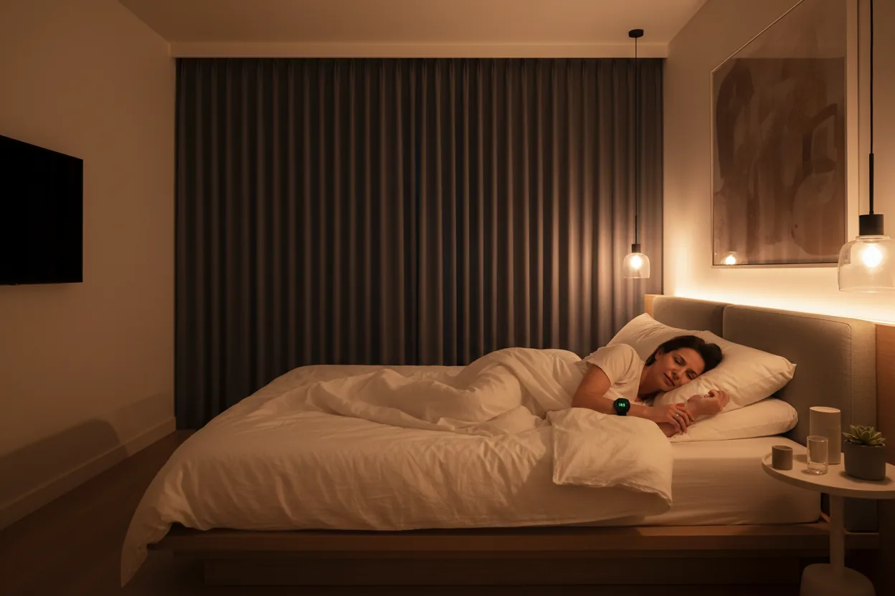
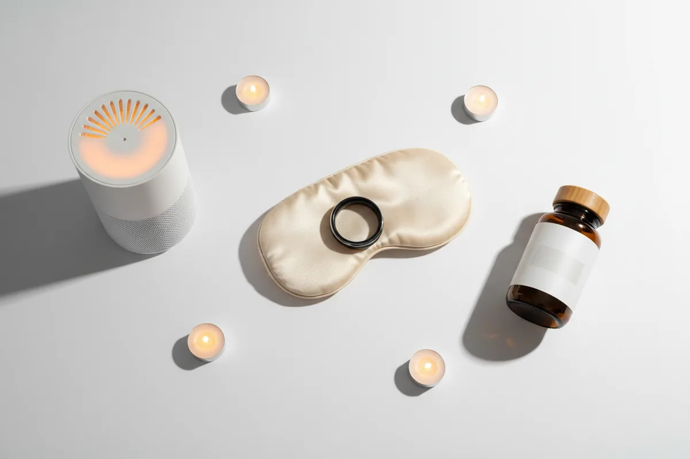

How to Improve Sleep Quality for Busy Adults Over 30 (Even With a Packed Schedule)
Struggling to sleep well with a packed schedule? Discover proven strategies to improve sleep quality for busy adults over 30 — starting tonight.

As an Amazon Associate I earn from qualifying purchases.
You finally get into bed at 11pn from qualifying purchases.
You finally get into bed at 11pm, exhausted from a full day — and then you're still awake at midnight, brain racing through tomorrow's to-do list. Sound familiar?
If you're wondering how to improve sleep quality for busy adults over 30, you're not alone. Most people in this stage of life are sleeping enough hours but waking up feeling like they didn't sleep at all. The problem usually isn't the quantity of sleep — it's the quality.
The good news: small, strategic changes to your evening routine can make a dramatic difference, even if your schedule stays exactly the same.
Quick Answer
The fastest way to improve sleep quality as a busy adult is to protect the hour before bed— cut screens, lower the room temperature, and use a consistent wind-down routine. You don't need more time. You need better sleep architecture.
Why Busy Adults Over 30 Sleep So Poorly
Here's what's actually happening:
After 30, your body produces less melatonin naturally. Add chronic stress, irregular schedules, and screen exposure at night — and your circadian rhythm gets completely disrupted.
Your body needs consistent signals to shift into sleep mode. When every day looks different and your phone is the last thing you see before closing your eyes, your nervous system stays in "alert" mode long after you want it to switch off.
This isn't a willpower problem. It's a biology problem — and biology responds to systems.
5 Practical Ways to Improve Sleep Quality When You're Always Busy
1. Set a "Wind-Down Alarm" — Not Just a Wake-Up Alarm
Most people only set a morning alarm. But your brain needs a cue to start shutting down, not just to wake up.
Set an alarm 60–90 minutes before your target bedtime. When it goes off, that's your signal: no more work emails, no more decision-making. This single habit retrains your nervous system over 2–3 weeks.
2. How to Improve Sleep Quality for Busy Adults Over 30 — Start With Your Room Temperature
Your body temperature needs to drop to initiate deep sleep. Most people sleep in rooms that are too warm.
The ideal sleeping temperature is 60–67°F (15–19°C). If you can't control your thermostat precisely, a bed climate system can make a dramatic difference — more on that below.
3. Stop Eating Within 3 Hours of Bedtime
Late meals spike your insulin and body temperature — both of which delay sleep onset and reduce deep sleep.
If you're someone who gets home late and eats dinner at 9pm, this is likely one of the biggest hidden factors in your poor sleep. A small adjustment — eating earlier or choosing lighter evening meals — often produces visible results within a week.
4. Use Light Strategically
Light is the most powerful signal your body uses to regulate sleep. The problem: most of us flood our eyes with blue light (phones, laptops, overhead lights) right up until bed, then expect to fall asleep instantly.
Two simple fixes:
- Morning: Get 10 minutes of natural light within the first hour of waking. This anchors your circadian rhythm.
- Evening: Dim overhead lights after 8pm. Use warm-tone lamps or amber bulbs instead.
5. Build a 10-Minute Wind-Down Ritual That's Actually Doable
Complicated sleep routines don't stick. What works for busy adults is a minimal, repeatable ritual that signals "sleep time" to your brain.
A simple version:
- Dim lights ✓
- Stretch or breathe for 5 minutes ✓
- No phone (or phone in another room) ✓
- Same bedtime — even on weekends ✓
That's it. Consistency beats perfection every time.
The Right Tools Can Make This Much Easier
Most of the strategies above are free. But if you want to accelerate results, a few well-chosen products genuinely help — especially if you're dealing with a partner who keeps different hours, a room you can't fully control, or travel that disrupts your routine.
Here's what's worth considering:
Sleep tracking: Knowing your actual sleep stages (not just hours) changes how you approach the problem. The Oura Ring Gen 3 gives you real data on your deep sleep, REM, and recovery scores — so you stop guessing and start optimizing.
Bed climate control: If temperature is an issue, the BedJet 3 is one of the smartest investments for adults over 30. It uses advanced air technology to cool or warm your bed on demand, with Biorhythm sleep technology that automatically adjusts temperature throughout the night. No lumpy pads, no water tubes — just better sleep.
Magnesium supplement: The BIOptimizers Magnesium Breakthrough combines 7 forms of magnesium to support relaxation, nervous system calm, and deeper sleep. One of the few supplements with real research behind it — particularly useful if you're chronically stressed.
Blackout sleep mask: If early light wakes you or you travel frequently, the Manta Sleep Mask Pro delivers total blackout without touching your eyes — one of the most underrated sleep upgrades you can make.
White noise: If you share a home with kids or a partner on a different schedule, the LectroFan Evo provides consistent, non-looping masking noise all night — far more reliable than any app.

Recommended Tools & Products
| Product | Why It Helps | Link |
|---|---|---|
| Oura Ring Gen 3 | Tracks real sleep stages, HRV & recovery scores | View on Amazon |
| BedJet 3 | Cools or warms your bed with smart Biorhythm technology | View on Amazon |
| Magnesium Breakthrough | 7-form magnesium blend for deeper sleep & calm | View on Amazon |
| Manta Sleep Mask Pro | Total blackout, adjustable, doesn't touch eyes | View on Amazon |
| LectroFan Evo | Consistent non-looping white noise all night | View on Amazon |
Disclosure: We may earn a small commission if you purchase through our links, at no extra cost to you. We only recommend products we'd genuinely use ourselves.
Common Sleep Mistakes Busy Adults Make
- Sleeping in on weekends— feels like recovery, actually shifts your circadian rhythm and makes Monday worse
- Using alcohol to wind down— reduces sleep onset time but destroys REM and deep sleep quality
- Exercising too late— intense exercise within 3 hours of bed elevates core temperature and cortisol
- Relying on melatonin long-term— helpful for jet lag and occasional use, but doesn't fix the underlying rhythm problem
- Checking the clock when you can't sleep— increases sleep anxiety, which makes it worse
FAQ
Q: How many hours of sleep do adults over 30 actually need?
Most adults need 7–9 hours, but the quality of those hours matters more than the number. Six hours of uninterrupted, deep sleep often beats 8.5 hours of fragmented sleep.
Q: Can I catch up on sleep on the weekend?
Partially. You can recover some sleep debt, but shifting your schedule by 2+ hours disrupts your circadian rhythm — which makes the following week harder. Consistency is more powerful than catch-up.
Q: Does melatonin actually work?
For jet lag and shifting your sleep window — yes. As a long-term solution to poor sleep quality — not really. It helps you fall asleep but doesn't improve deep sleep architecture.
Q: What's the single biggest factor in poor sleep quality?
For most busy adults over 30: inconsistent sleep timing. Your body's internal clock runs on regularity. Even one or two late nights a week can significantly reduce overall sleep quality.
Q: Is it worth buying a sleep tracker?
If you're serious about improving sleep, yes. Seeing your actual data — how much deep sleep you're getting, your resting heart rate, your recovery score — motivates real behavior change in a way that "try to sleep better" never does.
Final Tip
Learning how to improve sleep quality for busy adults over 30 doesn't require a complete lifestyle overhaul. It requires one consistent change at a time.
Start tonight with this: set a wind-down alarm 60 minutes before bed. Put your phone in another room. Keep the lights low.
That's one small daily move — exactly the kind that adds up to a big lifetime gain.
Want more practical health habits for busy adults? Browse our guides at EverydayFitHabits.com — built for people who don't have time to waste.